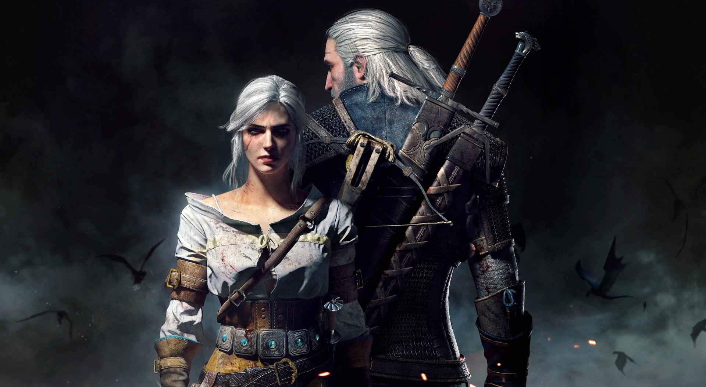
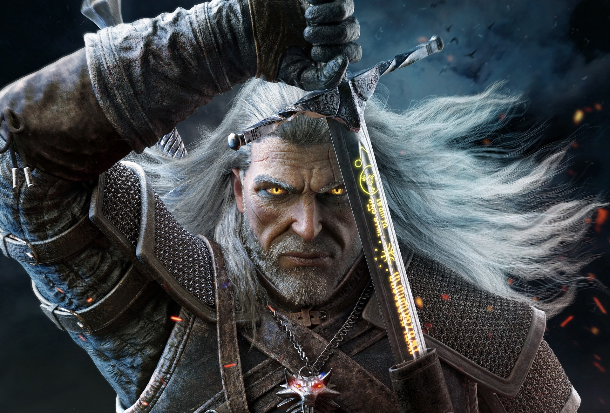
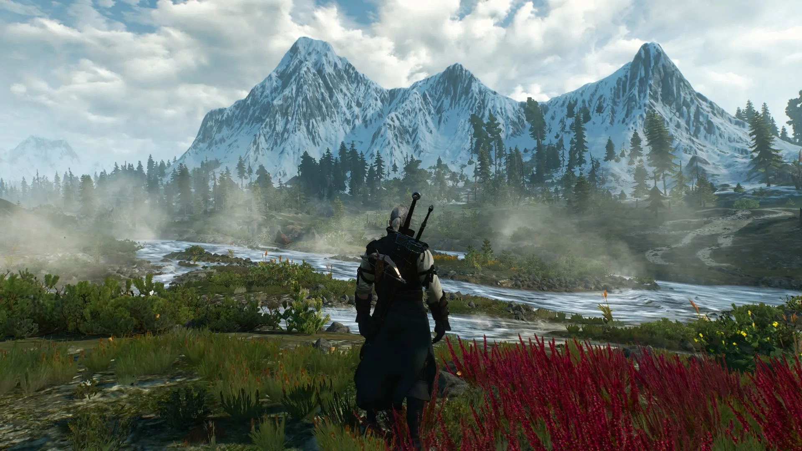
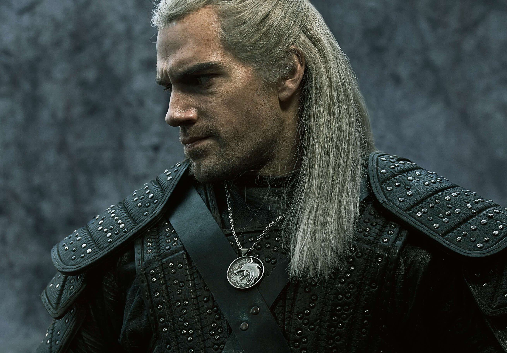
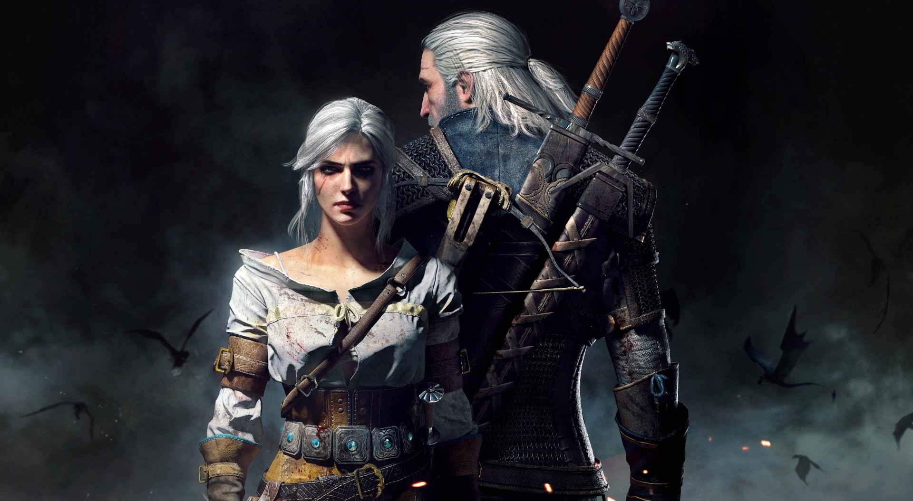
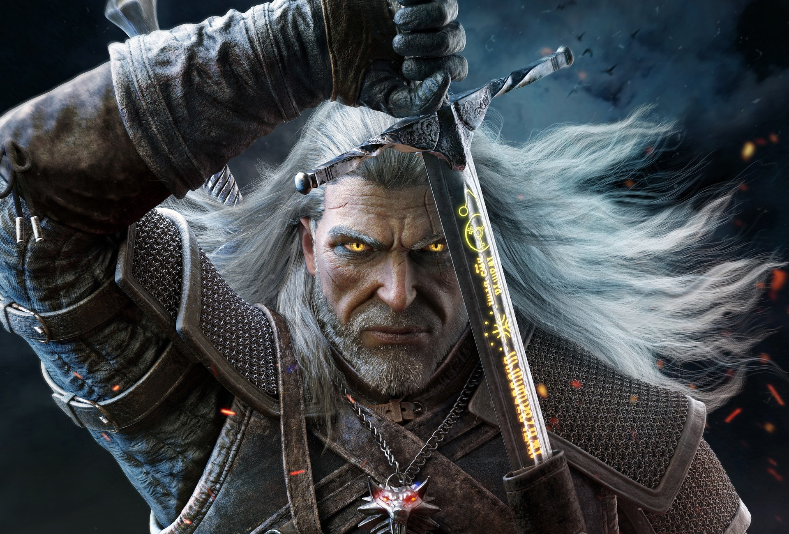
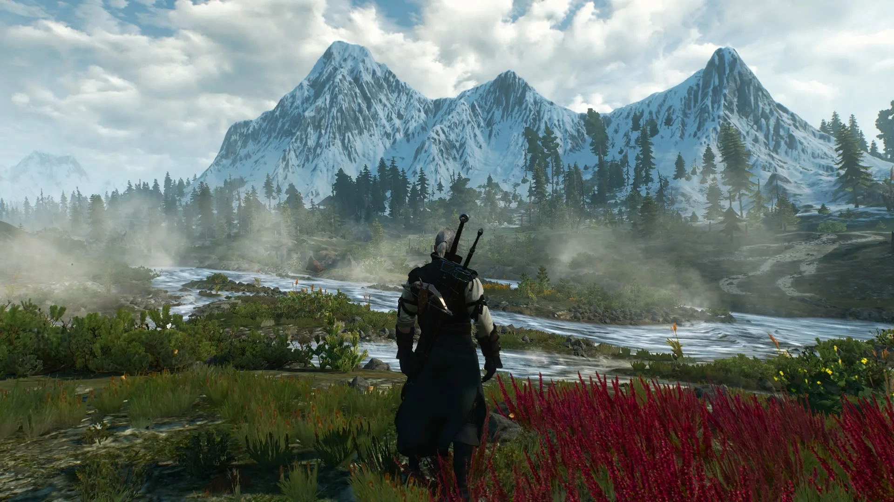
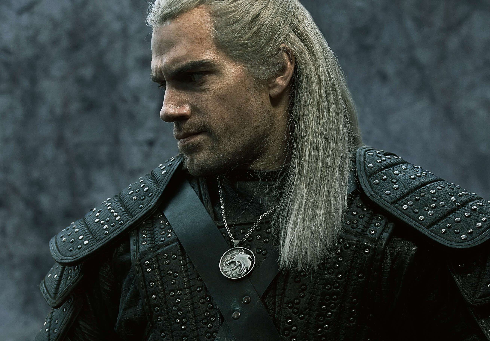

«Ведьма́к» (англ. The Witcher, польск. Wiedźmin) — компьютерная ролевая игра, разработанная польской компанией CD Projekt RED по мотивам одноимённой серии романов польского писателя Анджея Сапковского. Релиз игры на платформе Windows состоялся 24 октября 2007 года — в России, 26 октября — в Европе и 30 октября 2007 года — в США. В 2012 году вышла версия для OS X. Под управлением игрока предстает главный герой литературного мира Сапковского — ведьмак Геральт из Ривии. Действие игры разворачивается после событий саги о ведьмаке — еле оставшись в живых, Геральт впадает в амнезию и вынужден заново учить своё ремесло. Игрок восстанавливает потерянный опыт главного героя, сражаясь с человеческими противниками и монстрами. В то же время перед ним ставится моральный выбор, от которого зависит дальнейшая судьба игрового мира. Игра достоверно отражает мрачную атмосферу вселенной романов, однако её сюжет не получил официальной поддержки Сапковского.
Разработка «Ведьмака» продолжалась четыре года. В игре используется движок Aurora от BioWare. Релиз игры сопровождался рекламной кампанией, бюджет которой составил около 19 миллионов злотых. Игра была положительно встречена критиками, которые высоко оценили её сюжет, графику, звуковое сопровождение и боевую систему, но раскритиковали технические ошибки; большинство из них было исправлено в выпущенном в сентябре 2008 года «дополненном издании», в котором было также добавлена новая сюжетная линия. В 2011 году вышло продолжение игры под названием «Ведьмак 2: Убийцы королей». В мае 2015 года состоялся релиз третьей части серии — «Ведьмак 3: Дикая Охота».
 






